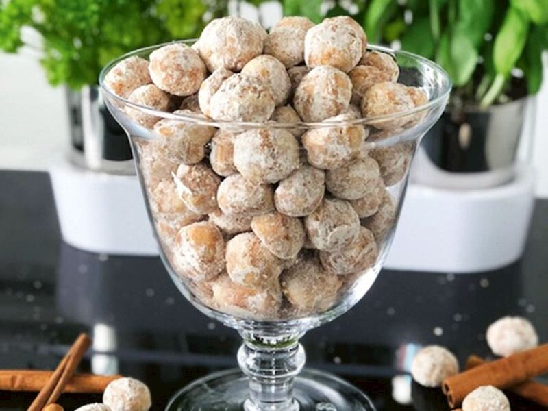

Kabartma tozu ve vanilya ile birlikte unu ekleyip karıştırın.
Karışımı kalıba döküp önceden ısıtılmış 280 derece fırında 35 dakika pişirin.
Tarçınlı Kurabiye

Tarifi
Malzemeler:
250 gr margarin veya tereyağı
Yarım çay bardağı sıvı yağ
1 çay bardağı pudra şekeri
1 adet yumurta akı
1 çay bardağı ince dövülmüş ceviz
1 paket vanilya
1 çay kaşığı tepeleme tarçın
1 paket kabartma tozu
4,5-5 su bardağı un
Yapılışı:
Öncelikle uygun bir karıştırma kabına tereyağını alalım.
Üzerine pudra şekeri, sıvı yağ, yumurta akı, vanilya, kabartma tozu, tarçın ve unun bir kısmını alarak yoğuralım. Unu yavaş yavaş ilave ederek ele yapışmayan yumuşak kıvamlı bir hamur elde edelim.
Hamurumuz istediğimiz kıvama geldikten sonra cevizi de ekleyelim ve son kez yoğuralım.
Hamurdan ceviz büyüklüğünde parçalar kopartalım, yuvarlayıp elimizle hafif bastırarak genişletelim ve pişirme kağıdı serdiğimiz fırın tepsisine dizelim. Tüm hamurumuz bitene kadar şekillendirelim. Bu ölçülerle ben 30 adet kurabiye elde ettim.
Kurabiyelerimizi önceden ısıttığımız 160 derece fırında yaklaşık 25 dakika pişmeye bırakalım.
Kurabiyeler fırından çıkar çıkmaz, bir kase içinde karıştırılmış pudra şekeri ve tarçın karışımına bulayalım ve servis tabağına alalım. Afiyet olsun!